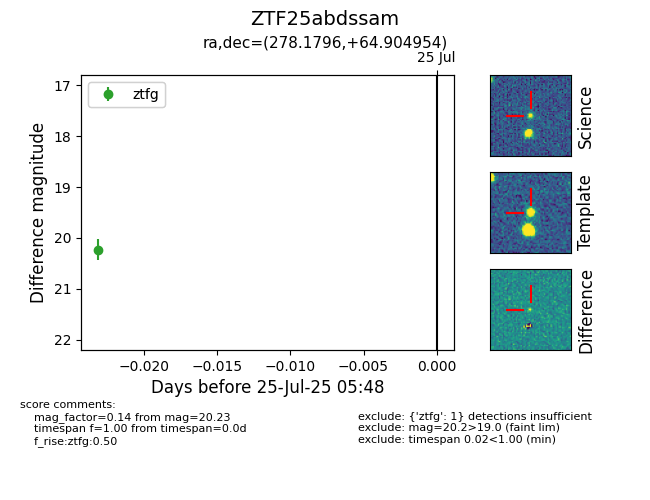

Target ZTF25abdssam at 2025-07-25 05:48, see:
FINK: fink-portal.org/ZTF25abdssam
Lasair: lasair-ztf.lsst.ac.uk/objects/ZTF25abdssam
ALeRCE: alerce.online/object/ZTF25abdssam
alt names
ZTF25abdssam (ztf,fink)
coordinates:
equatorial (ra, dec) = (278.1796,+64.90495)
galactic (l, b) = (94.7879,+26.34262)
photometry
last ztfg=20.23
1 ztfg detections
